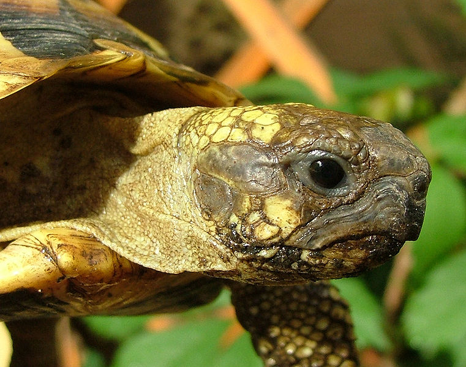
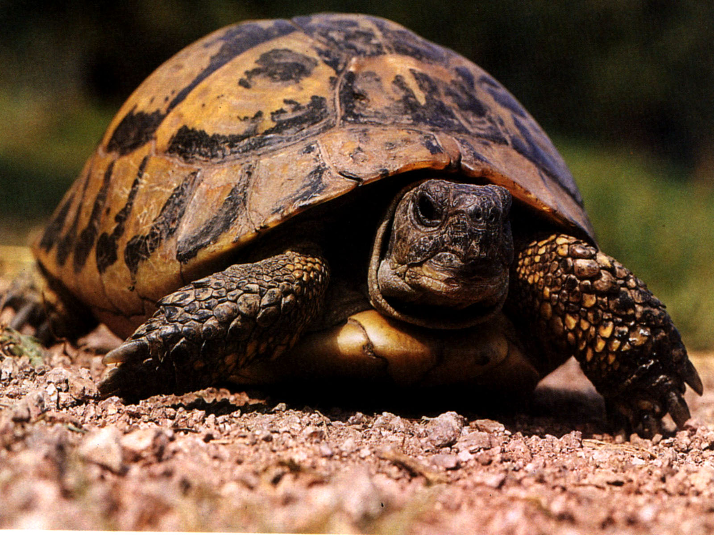
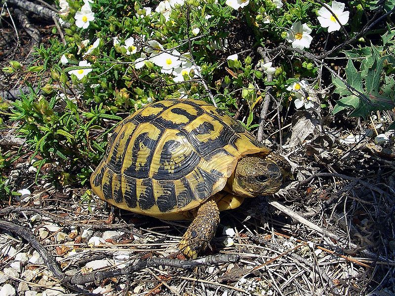
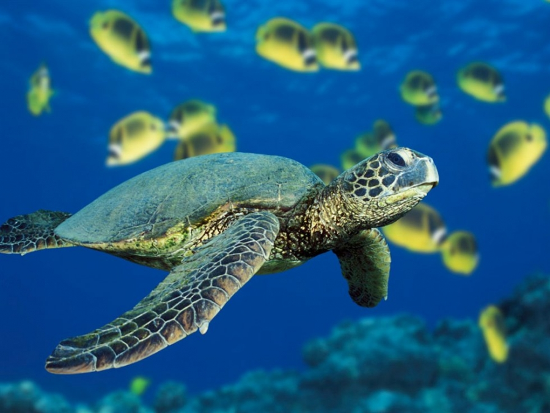

Χελώνα
Η χελώνα (λατ. Testudo) είναι ερπετό. Ανήκει στην αρτίγονη τάξη της πρωτόγονης υφομοταξίας αναψιδωτά. Χαρακτηριστικό τους ο οστέινος θώρακας (Χέλυο) για να προστατεύεται, την σαρκώδη γλώσσα και την απουσία δοντιών. Υπάρχουν χερσαίες, θαλάσσιες και αμφίβιες χελώνες. Ζουν και σε εύκρατα και σε τροπικά κλίματα. Ιδιαίτερο χαρακτηριστικό των χελωνών είναι το καβούκι τους, το οποίο προστατεύει το σώμα τους.
Οι στεριανές χελώνες είναι άγρια ζώα και προστατεύονται αυστηρά από την ελληνική και τη διεθνή νομοθεσία, που απαγορεύουν την αιχμαλωσία, την κακοποίηση ή τη θανάτωσή τους και το εμπόριο ζωντανών χελωνών ή μερών του σώματός τους.
Oι άγριες χελώνες ζουν ανάλογα με το είδος από 50 έως 100 χρόνια και διανύουν τεράστιες αποστάσεις (έως 200 χλμ.) κατά τη διάρκεια της ζωής τους. Τρέφονται την άνοιξη και το φθινόπωρο με τρυφερή βλάστηση όπως γρασίδια, χαμομήλια, αγριοζοχούς, άγρια ρόκα, βρούβες, λάπαθα, ραδίκια, πικραλίδες και πολλά άλλα, από τα οποία τσιμπολογούν τα τρυφερά μέρη των φυτών και τα άνθη.
Συνολικά επιλέγουν από μια ποικιλία περίπου 200 διαφορετικών φυτών. Το καλοκαίρι τρέφονται με ότι βρουν διαθέσιμο ακόμα και με αποξηραμένη βλάστηση,αν όχι καθόλου, μιας και το μεγαλύτερο διάστημα της ημέρας παραμένουν κρυμμένες στο χώμα ή κάτω από θάμνους, αποφεύγοντας τις πολλές μετακινήσεις, για να γλυτώσουν από τις υψηλές θερμοκρασίες και συντηρούνται με τα αποθέματα του λίπους που έχουν συγκεντρώσει κατά την άνοιξη. Μάλιστα την εποχή αυτή, που το νερό γίνεται δυσεύρετο, αναπληρώνουν την υγρασία του σώματός τους συνήθως απευθείας μέσω της τροφής ή μέσω της πρωινής υγρασίας (δροσιάς) πάνω στα φύλλα των φυτών.
Τις εποχές των βροχοπτώσεων (άνοιξη και φθινόπωρο), πίνουν άφθονο νερό από λακκούβες ή ρυάκια,ενώ τους αρέσει επίσης να δροσίζουν το καβούκι τους για αρκετή ώρα, ρυθμίζοντας έτσι την υγρασία του σώματός τους. Λατρεύουν επίσης την ηλιοθεραπεία, συνήθως νωρίς το μεσημέρι, που βοηθάει όπως στα περισσότερα είδη ζώων, στην παραγωγή από τον οργανισμό τους της πολύτιμης βιταμίνης D3 ή αλλιώς "βιταμίνης του ήλιου", μέσω της οποίας ρυθμίζεται η δυνατότητα απορρόφησης του ασβεστίου από τον οργανισμό τους.
Το χειμώνα πέφτουν σε χειμερία νάρκη κρυμμένες μέσα στο έδαφος,σε προφυλαγμένα από τα καιρικά φαινόμενα και τους θηρευτές τους. Πέρα από την χαμηλή βλάστηση τρέφονται, σποραδικά πάντα, με φρούτα που βρίσκουν πεσμένα κατά τις μετακινήσεις τους. Ιδιαίτερα τρελαίνονται για τα φραγκόσυκα, τα μούρα, τα βατόμουρα, ενώ δεν αποφεύγουν και τα υπόλοιπα όταν τα βρουν.
Οι ελληνικές στεριανές χελώνες ανήκουν στο γένος Testudo. Τα τρία είδη που συναντώνται στην Ελλάδα είναι η Κρασπεδωτή (Testudo marginata), η Μεσογειακή (Testudo hermanni) και η Ελληνική (Testudo graeca). Χρειάζονται ζεστό κλίμα, γι’ αυτό ζουν µόνο στις ηλιόλουστες μεσογειακές χώρες, κυρίως σε χαμηλό υψόμετρο. Κάνουν καθημερινά αρκετές ώρες ηλιοθεραπεία, γιατί η υπεριώδης ακτινοβολία και η ζεστασιά του ήλιου είναι στοιχεία απαραίτητα για την επιβίωσή τους. Το ίδιο αναγκαία είναι και η σκιά, όπου αποτραβιούνται όταν νιώθουν ότι τη χρειάζονται.
Δυστυχώς, η αργοκίνητη χελώνα, μόνη άμυνα της οποίας είναι το καβούκι της, απειλείται από πάμπολλους ανθρωπογενείς κινδύνους. Οι σημαντικότεροι είναι: συρρίκνωση και κατακερματισμός των βιοτόπων της, πυρκαγιές, τραυματισμοί από αυτοκίνητα και αγροτικά μηχανήματα, δηλητηριάσεις από εντομοκτόνα και ζιζανιοκτόνα. Οικονοµικοί μετανάστες από την ανατολική Ευρώπη και την Ασία τις τρώνε (αποτελούν σύνηθες έδεσμα στην παραδοσιακή κουζίνα τους). Επιπλέον, ζώντας ως κατοικίδια αντιμετωπίζουν σοβαρά προβλήματα υγείας και ασθένειες λόγω κακής διατροφής και συντήρησης. Ενώ η διάρκεια ζωής τους στη φύση ξεπερνά τα ογδόντα χρόνια, σε αιχμαλωσία ζουν από κάποιους μήνες έως λίγα χρόνια.
Μετά το ζευγάρωμα, που συνήθως γίνεται τον Απρίλιο, το θηλυκό ωοτοκεί μέχρι και 12 αυγά σε φωλιά σκαμμένη μέσα στη ζεστή γη. Στη συνέχεια εγκαταλείπει τελείως τα αυγά, τα οποία θα εκκολαφθούν με τη θερμότητα του ήλιου. Το Σεπτέμβριο με τις πρώτες βροχές που θα μαλακώσει το έδαφος, το αυγό θα σκάσει και ένα μικρό χελωνάκι που θα ζυγίζει περίπου 10 γραμμάρια θα γεννηθεί.
Όταν μεγαλώσει, το βάρος του θα είναι 100 φορές περισσότερο από αυτό. Στα πρώτα του 5 χρόνια το κέλυφος του θα είναι ακόμα πολύ μαλακό, πράγμα που το κάνει πολύ ευάλωτο και εύκολη λεία σε ζώα όπως αλεπούδες, σκύλους, αρουραίους, πουλιά, φίδια κ.λπ. Όταν όμως μεγαλώσει, ο μοναδικός εχθρός του είναι ο άνθρωπος.
Θαλάσσιες χελώνες
 Τα αρχεία των απολιθωμάτων οδηγούν στο συμπέρασμα ότι οι θαλάσσιες χελώνες είναι σύγχρονες των δεινοσαύρων. Αν και οι δεινόσαυροι εξαφανίστηκαν, οι χελώνες συνεχίζουν να επιβιώνουν έως σήμερα. Εκείνες οι αρχαίες χελώνες ζούσαν σε έλη. Αργότερα μερικές απ' αυτές άρχισαν να ζουν στη στεριά ενώ άλλες περνούσαν το μεγαλύτερο μέρος της ζωής τους στο νερό. Καθ' όλη την εξελικτική διαδικασία οι θαλάσσιες χελώνες έχουν διατηρήσει τα ακόλουθα χαρακτηριστικά γνωρίσματα:
- Όπως όλα τα ερπετά, είναι ποικιλόθερμες, το οποίο σημαίνει ότι χρησιμοποιούν τη θερμότητα του περιβάλλοντος σαν την κύρια πηγή συντήρησης της θερμότητας του σώματός τους.
- Μοιάζουν με τα πρωτόγονα αμφίβια και πτηνά στο ότι έχουν ένα μοναδικό μικρό οστό στο αυτί για να συλλαμβάνουν ήχους. Οι θαλάσσιες χελώνες είναι ιδιαίτερα ευαίσθητες στις χαμηλές συχνότητες όπως π.χ. οι δονήσεις του εδάφους και των κυμάτων.
- Έχουν πνεύμονες και αναπνέουν αέρα.
- Ωοτοκούν στη στεριά.
- Η καρδιά τους υποδιαιρείται σε δύο κόλπους και μια κοιλιά, το οποίο έχει σαν αποτέλεσμα την ατελή διπλή κυκλοφορία, κάτι που σημαίνει ότι μπορούν να αντέξουν ένα σχετικά υψηλό επίπεδο διοξειδίου του άνθρακα στο αίμα τους.
- Το σώμα τους προστατεύεται εντός ενός κερατοειδούς καβουκιού. Εξαίρεση αποτελεί η δερματοχελώνα (Dermochelys coriacea) με το δερματώδους επιφάνειας καβούκι.
Οι θαλάσσιες χελώνες δεν έχουν την ταχύτητα και την ευκινησία να συλλάβουν γρήγορα κινούμενη λεία. Γι' αυτό οι περισσότερες τρέφονται με αργοκίνητα ή ακίνητα ζώα όπως οστρακοειδή, τσούχτρες, μαλάκια, αχινούς, καβούρια, σφουγγάρια και με θαλάσσια φυτά ή φύκη. Οι χελώνες έχει βρεθεί ότι διαθέτουν καλά ανεπτυγμένη την αίσθηση της όσφρησης που μπορεί να τις βοηθήσει να εντοπίσουν τροφή.